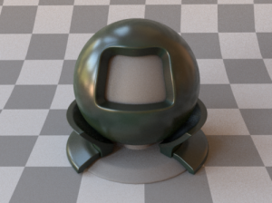

[Paper] Discovering an Interpretable Latent Space for Measured BRDF
Research in simultaneous learning of measured BRDF compression and synthetic material generation. Utilized beta-variational autoencoders to disentangle the learned latent space. Submitted to Eurographics 2023.
[
arxiv]
[Poster] Face De-occlusion Research
Introduced expression-aware loss function to learn better face reconstructions to improve facial expression recognition accuracy.
[
poster]

Image Segmentation
Comparison of classical image segmentation techniques: K-Means, MeanShift, Split & Merge, and Histogram Thresholding.
[
demo]
[
code]

Image Kernels
General implementation of image kernels for any convolution matrix.
[
code]

Perceptron Machine Learning
Linear pixel color classification based on
vectors.
[code]

Project RAISE
Research in improving social skills of students with disabilities through teaching basic coding. Developing a platform to deliver knowledge driven virtual characters over the web. Submitted to Frontiers in VR.
[
raiseup]

DebriefScape
Developed session observation tool to tag and analyze events. Supports live tagging and multi-session analysis. Currently used as a coaching tool to train teachers.
[
tool]

[Paper] Quantifying Skill in Lincoln-Douglas Debate
Research and evaluation of ranking systems such as Elo and Glicko-2 on Lincoln-Douglas Debate rounds. Successfully predicted the 2021 Tournament of Champions winner.
[
article]

[Paper] Statistical Analysis of the Impact of the Transition to Online Tournaments in LD Debate
Determine affect of online debate on participation, speaker points, and side bias. Notably discoveries on pool size changes and speaker point inflation.
[
article]

[Talk] Custom Vision for FTC, 2019 FIRST Championship Robotics Conference
Presented research on custom vision and machine learning for FTC teams. Discussed classical image processing, optimization methods, and deep learning approaches. Invited back for the 2020 World Championship.
[
code]
[
slides]

Lunar Knights Robotics Team Control Systems Lead
Compete in NASA Robotic Mining Competition. Lead design discussions and teach control system workshops. Wrote custom C++ and Python libraries for control systems.
[
code]
[
notes]

FIRST Robotics FTC Team Control Systems Lead
Competed in FIRST Tech Challenge (2015 - 2019). Inspire Award Winner (2018 World Championship) - top overall team. Robot Semifinalist (2017 World Championship). Specialized in custom vision and machine learning algorithms.
[
code]
Code Golf
Compete in fewest bytes coding challenges. Top 1% golfer.
[
profile]

Sorting Methods
Graphical demonstration of common sorting algorithms (Bubble, Selection, Insertion, Merge, and Quick).
[
demo]
[
code]

Assorted Projects
Ongoing repository to solidify programming concepts. Projects included: interpreter for custom language syntax, steganography, and fractals.
[
code]